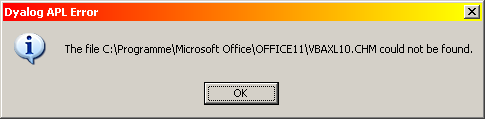

Master and Slave: Dyalog APL Directs Excel!
Vector 21:3, page 125
Introduction¶
As APLers, using an application from “Microsoft’s Office Suite” like Excel or Word as an OLE object makes sense in some cases. For example, printing under Windows can be a real nightmare!
Because APL has a great strength in dealing with tables, one often wishes to print them. Since Excel offers great features and flexibility for doing this, why should we not use it for this task? One possible way to do this is to use the Excel OLE object from within APL.
If you can’t beat them, join them!
This article will look into how to: start Excel; load a specified spreadsheet; get some or all of the data into (or out of) your workspace; and use Excel as a printing machine from APL. Also, to try to make this useful for APLers with no or little experience of using OLE objects, I will show some typical techniques to get information about a specific OLE objects.
This article is not addressed to experienced programmers, and doesn’t assume you are familiar with MSDN and Visual Studio.
A typical example of what we want to do is to call a command (say via a context menu) that exports selected rows from a grid in an APL GUI application out to Excel.
Starting Excel¶
The first thing to do is to start Excel as an OLEclient from APL:
'MyOleObj'⎕WC'OLEClient' 'Excel.Application'
If Excel was already running on your PC, that’s fine. If Excel was not already running, nothing will seem to happen, but Excel will now be running in the background. This is because the Excel GUI is not displayed by default. We can expressly ask Excel to display:
MyOleObj.Visible←1
Now let’s set the Caption of the Excel main window:
MyOleObj.Caption←'APL and Excel'
Next we need to create a brand new workbook, since without such a workbook, nothing could happen in Excel:
'MyOleObj.MyWorkbook'⎕WC MyOleObj.Workbooks
“MyWorkbook” need not necessarily be a child of “MyOleObj”, since there is no hierarchical dependency — but why not?
Workbooks and Templates¶
Do you wish to use a specific template? You probably know templates from Word (the *.dot-files); in Excel a corresponding mechanism is also available. An Excel template is a document with the file extension “xlt”. If your template is not held in Excel’s default template directory, make sure you specify the full path name:
#.MySheets←MyOleObj.MyWorkbook.Open'Standard.xlt'
If you are not interested in using a template, use the method “Add” instead:
#.MySheets←MyOleObj.MyWorkbook.Add
Worksheets¶
We can deal now with the newly-created workbook, which by default contains 3 sheets. Let’s create a new object that represents one of the sheets in our workbook. Because we have just created this workbook, it is by definition the active one, so we can deal with the “ActiveSheet”:
#.MySheet←#.MySheets.ActiveSheet
OK, that’s fine so far. For the next step we will insert some data and column titles into the sheet. First let’s create two variables, one holding the column titles, the other one is needed to represent our “table”:
ColTitles←'The Very First Lastname' 'Firstname' 'Street' 'Code' 'Town' Values←0 5⍴'' Values⍪←'Jäger' 'Kai' 'Thisstreet 1' 9999 'Nuremberg' Values⍪←'Taylor' 'Stephen' 'Thatstreet 2' 123456 'London'
The next step will be to insert the column titles into our sheet. We will need to specify starting and ending points. The starting point is (1,1), and the end point is (1,5) since we have 5 columns. (Excel works in origin 1). What is a bit strange is that the two points defining the range are “Objects” of type “Range”.
Visual Basic and Why it is Helpful¶
Let’s introduce now a good way to get information about OLE objects, methods and properties. Make Excel the topmost window and then press Alt+F11. This should open the Visual Basic for Applications IDE. If not, it is perhaps not installed as part of Office on your computer; but you can easily install this stuff.
Now you have access to the Visual Basic Help, a valuable source about the OLE object model of Excel! For example, enter the word “Range” into the “Search help” field. Then select “Range (List)” (or similar) from the list.
Syntax Problems: Default Methods…¶
In the Help window you will find valuable information on how to deal with “Range”. If you look around the help information, you will find statements similar to:
The problem is that this won’t work in APL as it stands! This is because in Visual Basic, for example, some objects have a “default method”. If a named object with a default method (for example “Worksheets”) is referenced without specifying a method, the default method is called. There is no such mechanism available in APL, so we need to call the “default method” explicitly. The “default method” for Worksheets is “Item”, so the statement translated into APL would be:
((MyOleObj.Worksheets.Item 1).Cells.Item 1 1).Value2 ←24
Note that here instead of “Value” the name “Value2” is used – we will come back to this later!
Arranging a Range¶
Let’s define two objects of type Range, useful as start and end points:
StartPoint←MySheet.Cells.Item(1 1) EndPoint←MySheet.Cells.Item(1,⍴ColTitles)
Accessing Data: Methods and Properties¶
Now we can reference “Value”, but be careful: it is not a property, it is a method. This method does not use an argument (in documentation it is specified as “void”). From APL a void argument is supplied as an empty numeric vector:
(MySheet.Range(StartPoint EndPoint)).Value ⍬ 24 [Null] [Null] [Null] [Null]
So we get back 24, together with some NULLs!
With the statement:
(MySheet.Range(StartPoint EndPoint)).Value2←ColTitles
we can assign the 5 cells in the first row in one single step.
You can check the cells by calling the appropriate method “Value”, but don’t forget the right argument; otherwise you get a pointer to the method instead of the contents of the cells:
(MySheet.Range StartPoint EndPoint).Value ⍬
As you may have noticed, here is another difference between Visual Basic and APL! In Visual Basic you use “Value” for both, referencing and specifying the contents of a certain cell. In APL, you need to call the method “Value” with a right argument to reference the cell contents, while you need to specify the “Value2” property to change the cell contents.
Specifying Columns and Data¶
Let’s insert the real data into the Excel sheet now. Again we need a “start point” and an “end point”. The start point is (2,1), the end point is 1 0 + the number of rows and cells.
StartPoint←MySheet.Cells.Item(2,1) EndPoint←MySheet.Cells.Item(1 0+⍴Values)
And now we can set the real data:
(MySheet.Range(StartPoint EndPoint)).Value2←Values
Changing Column Width¶
Currently all the columns are of the standard width. We should now tell Excel that we want the column width to fit the data. “Columns.AutoFit” is a method of the “Range” object, and it is therefore no surprise, that only the contents of the cells within that range are taken into consideration. This means that executing the statement:
(MySheet.Range(StartPoint EndPoint)).Columns.AutoFit
ignores the width of the cells in the first row, since this row is not part of the “Range” object we are currently using. Furthermore, (with some versions of Excel) an annoying result is printed in the session manager. Fortunately, both problems could be solved relatively easily. Instead of our own “Range” object, we can use the built-in object “UsedRange”. This “Range” includes at least all the cells that contain a value. “At least” because maybe there are some empty rows or columns embedded within the data, but this is unimportant here,
To suppress any annoying result, we can simply use an empty dynamic function:
{}MySheet.UsedRange.Columns.AutoFit
That’s it! Easy, isn’t it?
Suppressing Useless Warnings¶
Sometimes, Excel displays some really annoying dialogue boxes. A typical example is the “This macro has an invalid signature…” message box. If you need to make sure that no such dialogue box interrupts you, simply set:
MyOleObj.DisplayAlerts←0
But when you have finished, don’t forget to set this back to 1!
Excel as Printer Server¶
We started wanting to use Excel as a “printing machine”, and in fact we are able to do so by automating really everything. For such a task, you would not of course want to set
MyOleObj.Visible←1
The “PageSetup” Object¶
Before executing the print command, maybe you want to specify a number of parameters important for print tasks. For this we need a “PageSetup” object:
MyPageSetup←MySheet.PageSetup
Specifying a Header¶
Now we can specify a centred header:
MyPageSetup.CenterHeader←'APL and Excel'
...or a left header:
MyPageSetup.LeftHeader←'Stephen Taylor'
...or a right header:
MyPageSetup.RightHeader←'Kai Jäger'
...or a footer which should be centred:
MyPageSetup.CenterFooter←'Written for Vector'
...or a left footer:
MyPageSetup.LeftFooter←'Page 1'
...or a right footer:
MyPageSetup.RightFooter←'2004-12-26'
Miscellaneous Print Properties¶
Maybe you do not want to print the whole spreadsheet but only part of it. For this, we again need a “Range” object:
StartPoint←MySheet.Cells.Item(1 1) EndPoint←MySheet.Cells.Item(1 0+⍴Values) MyRange←MySheet.Range(StartPoint EndPoint) MyPageSetup.PrintArea←MyRange.AddressLocal ⍬ MyPageSetup.CenterHorizontally←0 MyPageSetup.CenterVertically←1
Display Print Results¶
To display the result, we need to call the method “PrintPreview”. This method also does not use an argument:
MySheet.PrintPreview ⍬
Got a DOMAIN ERROR?! We come back to this shortly.
Printing…¶
To print the sheet, merely call the method “PrintOut” (again with an empty vector as right argument).
MySheet.PrintOut ⍬
Coming to an End¶
If you want save the newly created spreadsheet, simply call the method “Save”As:
MySheet.SaveAs 'MyFilename.xml'
And finally we want quit Excel:
MyOleObj.Quit
Reading a Spreadsheet from Disk¶
Finally you may have a problem very close to what we discussed so far:
You (that is, your APL program) knows about an existing spreadsheet, or at least you expect there is such a spreadsheet, and now you want to read this data into your workspace. Of course you need the name and the folder where the spreadsheet can be found, but you prompt your user for that.
There are different ways to read the data from a spreadsheet into APL: you can use DDE (which is a wobbly thing); or you can use ODBC; or you can use Excel via OLE. Although the ODBC solution has some advantages (Excel is not needed, and it’s fast), we will only discuss the OLE solution here.
We already know how to load a specific file into Excel:
file←'C:\My Documents\My Spreadsheet.xls' MyOleObj.MyWorkbook.Sheet←MyOleObj.MyWorkbook.Open file
As you can see, the Open method is able to load not only a template but also an ordinary spreadsheet.
Again: the “Range” Object¶
Again the UsedRange object could be used to access all data in the current worksheet. This is fine since we don’t need to know anything about the data contained in that spreadsheet:
MyRange←MyOleObj.ActiveSheet.UsedRange Data←MyRange.Value ⍬
That’s it!
Valuable Sources of Information¶
So far we can do some useful things, but for a more complex task we need a general overview over the Excel OLE object model, of course.
This information is available on the MDSN pages on the web by Microsoft. The link is quite easy to remember:
http://msdn.microsoft.com/library/default.asp?url=/library/en-us/dv_wrcore/html/wrconExcelObjectModelOverview.asp
However, maybe you are interested in an alternative way: enter http://msdn.Microsoft.com into the browser’s address field and then the words <excel object model> into the search field. Select http://msdn.microsoft.com/library/en-us/dv_wrcore/html/ wrconExcelObjectModelOverview.asp from the result list.
Hints and Tips¶
Note that:
- there may or may not be some empty rows and columns around the real data
- some cells may contain a NULL
- Dates are returned as numeric vectors of length 7 – like
⎕TS!
To find out which cells are empty, use ⎕NULL:
Data≡¨⎕NULL
If you need to read the data from the second sheet of a workbook instead of the first one:
(MyOleObj.Sheets.Item 2).UsedRange.Value ⍬
If there is no such sheet available, because that file consists of one sheet only, you will get a DOMAIN ERROR here.
However, this technique may be dangerous: another user may have moved the second worksheet to be the third one now. So it is maybe a better idea to use the name of the sheet you are interested in. For example, if you know that this worksheet is named “ABC”, you can do this:
(MyOleObj.Sheets.Item'ABC').UsedRange.Value ⍬
And of course you can use this syntax, too:
MySheet←MyOleObj.Sheets.Item'ABC' MySheet.UsedRange.Value ⍬
A note on APL syntax:
MySheet.Range(StartPoint EndPoint).AddressLocal ⍬
gives a Length Error but
MySheet.Range(StartPoint EndPoint)).AddressLocal ⍬
works just fine.
The F1 key in APL¶
If Visual Basic for Applications is installed together with Office, entering the name of an OLE item (object, property, method or event) and then pressing F1, should display a proper help file. However, on some but not all machines that does not work. Instead a message box is displayed stating that the help file could not be found:

(The exact file name and location will vary depending on the versions of Office and Windows running on your PC.)
We found that a common reason for this is that the file VBAXL10.chm is not found in C:\Programme\Microsoft Office\Office11 but in C:\Programme\Microsoft Office\Office11\1031\VBAXL10.CHM instead.
This is really annoying! One possible solution is to simply copy the help file from C:\Programme\Microsoft Office\Office11\1031 to C:\Programme\Microsoft Office\Office11 (UK and US readers should look in Program Files).
Visual Basic Macros¶
A final suggestion. Sometimes you might need to do something but are unable to find out how from the documentation. In such a case it may be helpful to use a Visual Basic Macro: start “Recording Macro” within Excel, perform the needed actions, stop recording and then take a look into the Visual Basic code. Although there are some differences between Visual Basic and APL, this may still be helpful.
Interruptions and Trapping¶
If you need to use OLE automation within a real application, be aware that sometimes astonishing things may happen. Just because a certain operation works well 20 or 30 times does not mean that it will run at every time! Sometimes there are DOMAIN ERRORs or the like, that you are not able to reproduce or to explain, and of course this is really bad news. However, you will get a feeling for how to deal with the code over the time. Adding some explicit “:Trap” statements might be a good idea here, but you should avoid “:Trap 0”.
For example: the user decides to “print" a document with the “Microsoft Document Image Writer” Office 2003 comes with. Then the user gets a “Save File" dialog, because this printer driver does not print but create a file you may display with a viewer. If for any reason the user then presses the “Cancel”button in this “Save”Dialog box, you get a DOMAIN ERROR in APL!
Therefore you should not use
MySheet.PrintOut ⍬
but:
:Trap 11 ⋄ MySheet.PrintOut ⍬ ⋄ :EndTrap
Thanks to Ray Cannon for help in editing this article.